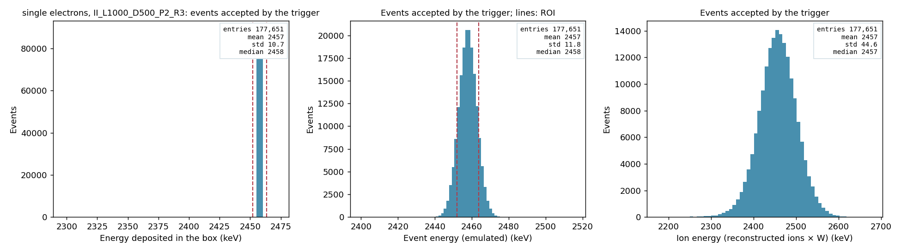
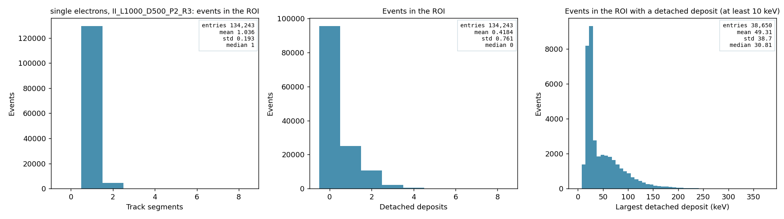
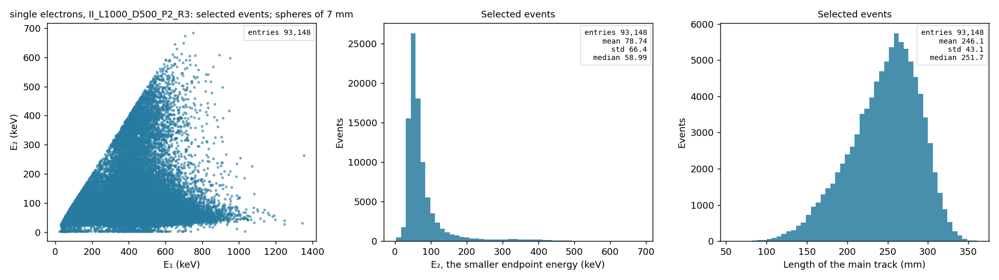
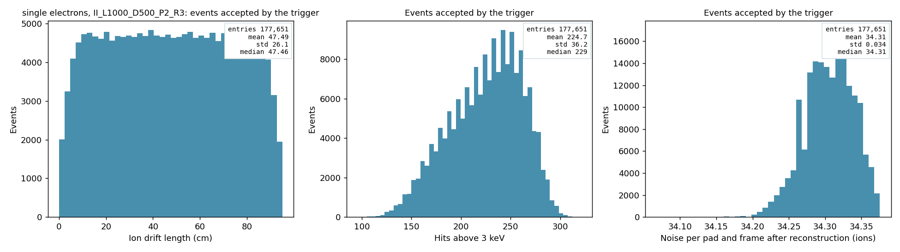

Selection
| Step | Events | Fraction of the previous step | Fraction of “generated in geant4” |
|---|---|---|---|
| Generated in Geant4 | 300,000 | 100 % | |
| In the input files | 234,161 | 78.05 % | 78.1 % |
| Accepted by the fast trigger | 177,651 | 75.87 % | 59.2 % |
| Event energy in the ROI | 134,243 | 75.57 % | 44.7 % |
| Track selection | 93,148 | 69.39 % | 31 % |
ROI: event energy between 2452.03 and 2463.63 keV. Track selection: components at 5.5 mm, no detached deposit of 10 keV or more, one segment or at most 3 joined at 8 mm (track selection).
| Rejected by the fast trigger | Events | Fraction of the events read |
|---|---|---|
| track or energetic gamma deposit outside the detector | 0 | 0.00 % |
| main track near the EL entry | 11,954 | 5.11 % |
| track larger than the frame | 0 | 0.00 % |
| frame outside the detector | 3,440 | 1.47 % |
| gamma deposit outside the frame | 41,116 | 17.56 % |
Accepted events with a pad-frame without valid reconstruction: 0; with a pad outside the linear window of VH1: 0.
Energy
The event energy is the energy deposited in the simulated box smeared with 0.47 % FWHM at Qββ; the ion energy is the sum of the reconstructed ions.

Track selection

Selected tracks

Readout

Numerical results: events.h5. Chain and columns: simulation chain.